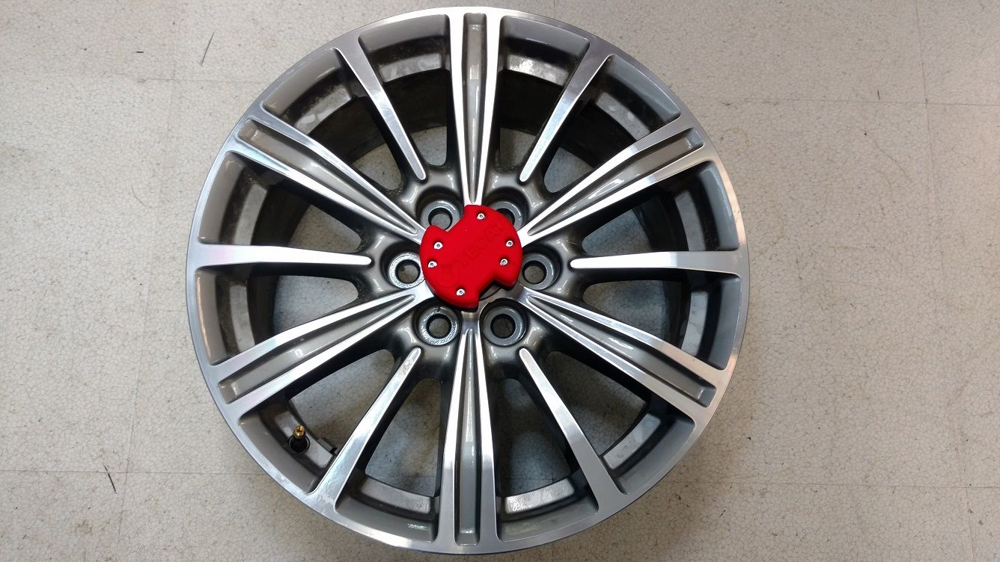

Wireless thermocouple system
TECAT TC2-K
Two-channel wireless K-type thermocouple system for brake rotor temperature inside the wheel hub.
- K-type thermocouple inputs
- 2
- top of thermocouple range
- 1,000 °C
- resolution
- ±1 °C
- remote unit
- 350 g


Overview
The TECAT TC2-K reads two K-type thermocouples on a rotating wheel and sends the readings by radio to a base unit. It was designed for continuous brake rotor and spindle bearing temperature measurement and can be adapted to other applications. The remote unit sits in an 89 mm diameter by 42 mm enclosure on a mounting base made for each hub.
What it measures
- Temperature from two K-type thermocouples
- Reference temperature at the remote unit, −25 °C to +125 °C
Features
- Two K-type thermocouple inputs with on-board channel amplification and on-board temperature referencing.
- Digital thermocouple range is −40 °C to +1,000 °C; analog output range is −40 °C to +984 °C.
- The remote unit is packaged in a standard 89 mm diameter by 42 mm enclosure on a mounting base designed for each wheel hub or application.
- The base unit plugs into a PC USB port for TECAT Data Viewer, or into a power supply and DAQ through two 0 V to 5 V analog outputs.
- Data rate is user selectable from 1 Hz to 10 Hz.
- The remote draws 1.65 mA active with both thermocouples at 10 Hz and 25 µA inactive.
- The system installs without altering the part under test and can be removed.
Specifications
| Remote unit | |
|---|---|
| Sensor input | 2 K-type thermocouples |
| Thermocouple range | Digital output: −40 °C to +1,000 °C. Analog output: −40 °C to +984 °C |
| Measurement resolution | ±1 °C |
| Data rate | User selectable, 1 Hz to 10 Hz |
| Power supply | 3 V DC to 6 V DC, 6 V DC absolute maximum |
| Battery | 3.7 V single cell: 550 mAh LiSOCl2 standard; 400 mAh, 850 mAh, or 1,000 mAh Li-Poly optional |
| Current draw | 1.65 mA active with 2 K-type thermocouples at 10 Hz; 25 µA inactive; varies with oversampling and packet size |
| Dimensions | 89 mm diameter × 42 mm height, standard enclosure; mounting base is custom for each application and not included |
| Mass | 350 g |
| Operating temperature | −25 °C to +125 °C (also the reference temperature measurement range) |
| Specification conditions | 10 Hz data rate, 2 K-type thermocouples, 3.7 V Li-Poly battery |
| Radio link | |
| Carrier | 2.45 GHz direct sequence spread spectrum, 2.405 GHz to 2.480 GHz, license free worldwide |
| RF channels | 16 |
| Packet standard | IEEE 802.15.4 capable, open communication architecture |
| Range | 30 m (100 ft) line of sight |
| Base unit | |
| Host connection | USB, mounts as a COM port; up to 230,400 baud, 8 data bits, no parity, 1 stop bit |
| Analog outputs | 2 channels, 0 V to 5 V |
| Power supply | 5 V DC unregulated |
| Software | |
| Software | TECAT Data Viewer, or user supplied |
| Functions | Configuration, calibration, live monitoring, data logging |
How the system works
-
Remote unit
Mounts on the moving part. Holds the capture electronics, Micro-Measurements strain gages or thermocouples, the radio, and a long-life battery.
-
Base unit
Plugs into your PC by USB. Holds the antenna and receiver, with analog outputs that feed your data acquisition system.
-
TECAT Data Viewer
Software on the PC for setup, calibration, live monitoring, and recording.
Downloads
-
TC2-K Data Sheet
Two-page data sheet for the TECAT TC2-K wireless temperature system, which reads two K-type thermocouples and was designed for brake rotor measurements. Published under the earlier WISER name.
-
Brake Rotor Temperature Measurements
Application note on measuring brake rotor temperature inside a wheel hub with a wireless system that uses two K-type thermocouples.
-
TECAT Introduces New Wireless Temperature Measurement and Monitoring System for Automotive Brake Rotors
TECAT introduced the WISER TC2-K, a wireless temperature system for automotive brake rotors designed to mount inside wheel hubs.
Where it's used

Ready to measure?
Tell us about the part and what you need to measure, and we'll follow up with a recommendation and a quote.